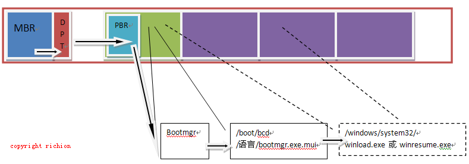
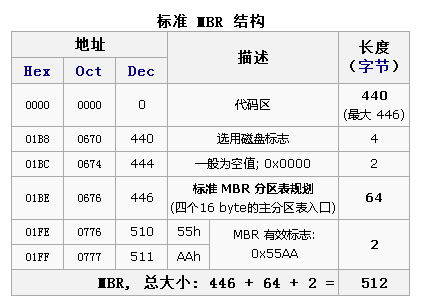
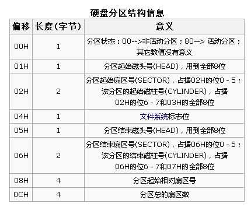

Nt5x:
1. Bios
加电自检
把磁盘0面0道1扇区的512个字节的信息拷贝到内存中(0000:7C00H)
这512个字节(称主引导扇区MBR(Master Boot Record)，见“标准MBR结构“)中只有前面的446(称主引导记录)个可以放程序，后面的64个字节（见硬盘分区结构信息）放的DPT(Disk Partition Table)分区表，最后两个字节放的是0xAA55表示引导扇区有效.
执行MBR程序
2. MBR
查找DPT分区表中活动分区位置，执行此活动分区的主引导记录程序(首扇区,类似MBR的前446字节程序)
3. 活动分区的主引导记录程序
调用Ntldr
4. Ntldr(之前一直调用INT 13访问硬盘，之后会加载磁盘驱动）
读取Boot.ini,显示引导加载菜单,若选择了NT,调用Ntdetect,com;否则调用Bootsect.dos
5. Ntdetect.com
检测计算机硬件，并将结果保存在注册表之中
6. Ntldr
加载NTOSKRNL.EXE
加载硬件抽象层(HAL.dll)
读取“HKEY_LOCAL_MACHINE\System\select”键值来决定哪一个ControlSet将被加载
加载“HKEY_LOCAL_MACHINE\SYSTEM\ControlSet002\Services”中start键值为0的底层设备驱动
控制权传递给NTOSKRNL.EXE，至此引导过程结束。
Nt6x:
前两步与前面相同
3. 活动分区的主引导记录程序
调用Bootmgr
4. Bootmgr(位于主激活分区内，属于系统隐藏文件)
从 BCD(Boot Configuration Data,/boot/bcd,相当于boot.ini,基于数据库,用bcdeit修改) 中读取 Boot Manager 菜单的语言版本信息
调用 BOOTMGR 与相应语言的 BOOTMGR.EXE.MUI(/boot/[ 语言 ]/bootmgr.exe.mui) 组成相应语言的启动菜单
显示引导管理器.
--若选择Nt6x,寻找系统分区windows/system32 下的 winload.exe 加载操作系统内核;
--若选择Nt5x,转入 xp 的启动流程，找到 xp 的 ntldr 然后启动



如果某一分区在硬盘分区表的信息如下
80 01 01 00 0B FE BF FC 3F 00 00 00 7E 86 BB 00
则我们可以看到，最前面的"80"是一个分区的激活标志，表示系统可引导[1]；"01 01 00"表示分区开始的磁头号为1，开始的扇区号为1，开始的柱面号为0；"0B"表示分区的系统类型是FAT32，其他比较常用的有04（FAT16）、07（NTFS）；"FE BF FC"表示分区结束的磁头号为254，分区结束的扇区号为63、分区结束的柱面号为764；"3F 00 00 00"表示首扇区的相对扇区号为63；"7E 86 BB 00"表示总扇区数为12289662。
对于现代大于8.4G的硬盘，CHS已经无法表示, BIOS使用LBA模式，对于超出的部分，CHS值通常设为 FEFFFF, 并加以忽略，直接使用08-0f的4字节相对值，再进行内部转换.